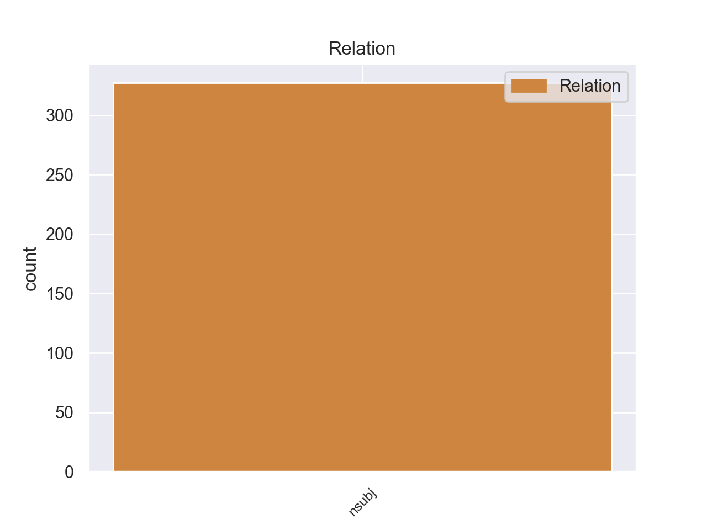
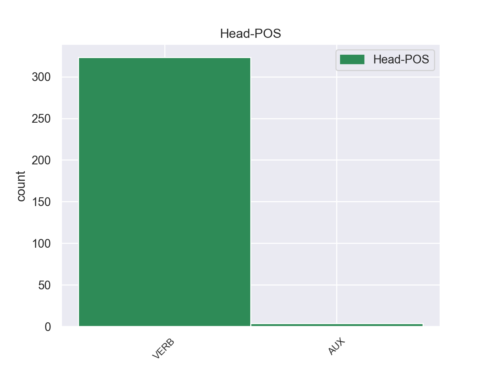
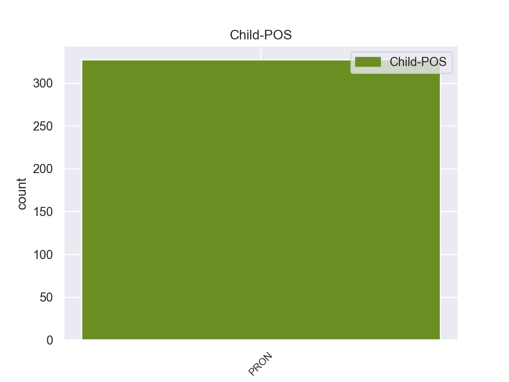

Distribution of features within this leaf



Agreement Rules sorted by frequency.
- When the dependent token is the nominal subject(nsubj) of the head token,
1 Αυτό _ _ _ _ 0 _ _ _
2 μπορεί _ _ _ _ 0 _ _ _
3 να _ _ _ _ 0 _ _ _
4 μην _ _ _ _ 0 _ _ _
5 οδηγήσει _ _ _ _ 0 _ _ _
6 σ _ _ _ _ 0 _ _ _
7 τη _ _ _ _ 0 _ _ _
8 λήξη _ _ _ _ 0 _ _ _
9 του _ _ _ _ 0 _ _ _
10 εν _ _ _ _ 0 _ _ _
11 λόγω _ _ _ _ 0 _ _ _
12 ζητήματος _ _ _ _ 0 _ _ _
13 αλλά _ _ _ _ 0 _ _ _
14 , _ _ _ _ 0 _ _ _
15 σ _ _ _ _ 0 _ _ _
16 τη _ _ _ _ 0 _ _ _
17 μορφή _ _ _ _ 0 _ _ _
18 υπό _ _ _ _ 0 _ _ _
19 την _ _ _ _ 0 _ _ _
20 οποία _ _ _ _ 0 _ _ _
21 την _ _ _ _ 0 _ _ _
22 λάβαμε _ _ _ _ 0 _ _ _
23 , _ _ _ _ 0 _ _ _
24 αυτή _ _ _ _ 0 _ _ _
25 η _ _ _ _ 0 _ _ _
26 αίτηση _ _ _ _ 0 _ _ _
27 άρσης _ _ _ _ 0 _ _ _
28 της _ _ _ _ 0 _ _ _
29 ασυλίας _ _ _ _ 0 _ _ _
30 ήταν _ _ _ _ 0 _ _ _
31 , _ _ _ _ 0 _ _ _
32 κατά _ _ _ _ 0 _ _ _
33 την _ _ _ _ 0 _ _ _
34 άποψη _ _ _ _ 0 _ _ _
35 της _ _ _ _ 0 _ _ _
36 Επιτροπής _ _ _ _ 0 _ _ _
37 Νομικών _ _ _ _ 0 _ _ _
38 Θεμάτων _ _ _ _ 0 _ _ _
39 , _ _ _ _ 0 _ _ _
40 απαράδεκτη _ _ _ _ 0 _ _ _
41 , _ _ _ _ 0 _ _ _
42 άποψη _ _ _ _ 0 _ _ _
43 την _ _ _ _ 0 _ _ _
44 οποία οποία PRON _ Case=Nom|Gender=Masc|Number=Sing|Person=3|PronType=Rel 45 nsubj _ _
45 συνιστώ συνιστώ VERB _ Aspect=Imp|Mood=Ind|Number=Plur|Person=3|Tense=Pres|VerbForm=Fin|Voice=Act 0 _ _ _
46 σ _ _ _ _ 0 _ _ _
47 το _ _ _ _ 0 _ _ _
48 Σώμα _ _ _ _ 0 _ _ _
49 να _ _ _ _ 0 _ _ _
50 υιοθετήσει _ _ _ _ 0 _ _ _
51 . _ _ _ _ 0 _ _ _
Disagree Examples:
1 Ο _ _ _ _ 0 _ _ _
2 Υπουργός _ _ _ _ 0 _ _ _
3 Εξωτερικών _ _ _ _ 0 _ _ _
4 της _ _ _ _ 0 _ _ _
5 Ρωσίας _ _ _ _ 0 _ _ _
6 , _ _ _ _ 0 _ _ _
7 Σεργκέι _ _ _ _ 0 _ _ _
8 Λαβρόφ _ _ _ _ 0 _ _ _
9 , _ _ _ _ 0 _ _ _
10 επιβεβαίωσε _ _ _ _ 0 _ _ _
11 τις _ _ _ _ 0 _ _ _
12 λεπτομέρειες _ _ _ _ 0 _ _ _
13 συμφωνίας _ _ _ _ 0 _ _ _
14 που που PRON _ Case=Nom|Gender=Fem|Number=Plur|Person=3|PronType=Rel 16 nsubj _ _
15 θα _ _ _ _ 0 _ _ _
16 επιτρέπει επιτρέπει VERB _ Aspect=Imp|Mood=Ind|Number=Plur|Person=1|Tense=Pres|VerbForm=Fin|Voice=Act 0 _ _ _
17 σ _ _ _ _ 0 _ _ _
18 τις _ _ _ _ 0 _ _ _
19 ΗΠΑ _ _ _ _ 0 _ _ _
20 και _ _ _ _ 0 _ _ _
21 άλλα _ _ _ _ 0 _ _ _
22 μέλη _ _ _ _ 0 _ _ _
23 του _ _ _ _ 0 _ _ _
24 ΝΑΤΟ _ _ _ _ 0 _ _ _
25 να _ _ _ _ 0 _ _ _
26 χρησιμοποιούν _ _ _ _ 0 _ _ _
27 αεροδρόμιο _ _ _ _ 0 _ _ _
28 σ _ _ _ _ 0 _ _ _
29 την _ _ _ _ 0 _ _ _
30 κεντρική _ _ _ _ 0 _ _ _
31 Ρωσία _ _ _ _ 0 _ _ _
32 ως _ _ _ _ 0 _ _ _
33 κέντρο _ _ _ _ 0 _ _ _
34 ανεφοδιασμού _ _ _ _ 0 _ _ _
35 των _ _ _ _ 0 _ _ _
36 δυνάμεων _ _ _ _ 0 _ _ _
37 που _ _ _ _ 0 _ _ _
38 βρίσκονται _ _ _ _ 0 _ _ _
39 σ _ _ _ _ 0 _ _ _
40 το _ _ _ _ 0 _ _ _
41 Αφγανιστάν _ _ _ _ 0 _ _ _
42 . _ _ _ _ 0 _ _ _
1 Συγχαίρω _ _ _ _ 0 _ _ _
2 τη _ _ _ _ 0 _ _ _
3 βελγική _ _ _ _ 0 _ _ _
4 Προεδρία _ _ _ _ 0 _ _ _
5 για _ _ _ _ 0 _ _ _
6 την _ _ _ _ 0 _ _ _
7 έγκριση _ _ _ _ 0 _ _ _
8 αυτού _ _ _ _ 0 _ _ _
9 του _ _ _ _ 0 _ _ _
10 εγγράφου _ _ _ _ 0 _ _ _
11 , _ _ _ _ 0 _ _ _
12 παρά _ _ _ _ 0 _ _ _
13 τα _ _ _ _ 0 _ _ _
14 προβλήματα _ _ _ _ 0 _ _ _
15 που που PRON _ Case=Nom|Gender=Fem|Number=Plur|Person=3|PronType=Rel 16 nsubj _ _
16 δημιούργησαν δημιούργησαν VERB _ Aspect=Imp|Mood=Ind|Number=Plur|Person=1|Tense=Pres|VerbForm=Fin|Voice=Act 0 _ _ _
17 ορισμένες _ _ _ _ 0 _ _ _
18 αντιπροσωπείες _ _ _ _ 0 _ _ _
19 , _ _ _ _ 0 _ _ _
20 και _ _ _ _ 0 _ _ _
21 θέλω _ _ _ _ 0 _ _ _
22 να _ _ _ _ 0 _ _ _
23 επαναλάβω _ _ _ _ 0 _ _ _
24 τα _ _ _ _ 0 _ _ _
25 συγχαρητήριά _ _ _ _ 0 _ _ _
26 μας _ _ _ _ 0 _ _ _
27 σ _ _ _ _ 0 _ _ _
28 το _ _ _ _ 0 _ _ _
29 Συμβούλιο _ _ _ _ 0 _ _ _
30 και _ _ _ _ 0 _ _ _
31 σ _ _ _ _ 0 _ _ _
32 την _ _ _ _ 0 _ _ _
33 Επιτροπή _ _ _ _ 0 _ _ _
34 και _ _ _ _ 0 _ _ _
35 τη _ _ _ _ 0 _ _ _
36 χαρά _ _ _ _ 0 _ _ _
37 μας _ _ _ _ 0 _ _ _
38 για _ _ _ _ 0 _ _ _
39 την _ _ _ _ 0 _ _ _
40 υιοθέτηση _ _ _ _ 0 _ _ _
41 αυτών _ _ _ _ 0 _ _ _
42 των _ _ _ _ 0 _ _ _
43 κειμένων _ _ _ _ 0 _ _ _
44 . _ _ _ _ 0 _ _ _
1 Επομένως _ _ _ _ 0 _ _ _
2 , _ _ _ _ 0 _ _ _
3 πρόκειται _ _ _ _ 0 _ _ _
4 να _ _ _ _ 0 _ _ _
5 υπερψηφίσουμε _ _ _ _ 0 _ _ _
6 μία _ _ _ _ 0 _ _ _
7 έκθεση _ _ _ _ 0 _ _ _
8 Watson _ _ _ _ 0 _ _ _
9 , _ _ _ _ 0 _ _ _
10 η _ _ _ _ 0 _ _ _
11 οποία _ _ _ _ 0 _ _ _
12 δεν _ _ _ _ 0 _ _ _
13 περιλαμβάνει _ _ _ _ 0 _ _ _
14 τροπολογίες _ _ _ _ 0 _ _ _
15 σ _ _ _ _ 0 _ _ _
16 το _ _ _ _ 0 _ _ _
17 κείμενο _ _ _ _ 0 _ _ _
18 το _ _ _ _ 0 _ _ _
19 οποίο οποίο PRON _ Case=Nom|Gender=Masc|Number=Sing|Person=3|PronType=Rel 20 nsubj _ _
20 θεωρούμε θεωρούμε VERB _ Aspect=Imp|Mood=Ind|Number=Plur|Person=1|Tense=Pres|VerbForm=Fin|Voice=Act 0 _ _ _
21 παγιωμένο _ _ _ _ 0 _ _ _
22 από _ _ _ _ 0 _ _ _
23 την _ _ _ _ 0 _ _ _
24 τελευταία _ _ _ _ 0 _ _ _
25 Σύνοδο _ _ _ _ 0 _ _ _
26 Κορυφής _ _ _ _ 0 _ _ _
27 . _ _ _ _ 0 _ _ _
1 Ο _ _ _ _ 0 _ _ _
2 οδηγός _ _ _ _ 0 _ _ _
3 ενός _ _ _ _ 0 _ _ _
4 φορτηγού _ _ _ _ 0 _ _ _
5 , _ _ _ _ 0 _ _ _
6 ο _ _ _ _ 0 _ _ _
7 οποίος οποίος PRON _ Case=Nom|Gender=Masc|Number=Sing|Person=3|PronType=Rel 18 nsubj _ _
8 είναι _ _ _ _ 0 _ _ _
9 επίσης _ _ _ _ 0 _ _ _
10 και _ _ _ _ 0 _ _ _
11 κάτοχος _ _ _ _ 0 _ _ _
12 του _ _ _ _ 0 _ _ _
13 οχήματός _ _ _ _ 0 _ _ _
14 του _ _ _ _ 0 _ _ _
15 - _ _ _ _ 0 _ _ _
16 και _ _ _ _ 0 _ _ _
17 εδώ _ _ _ _ 0 _ _ _
18 επανέρχομαι επανέρχομαι VERB _ Aspect=Imp|Mood=Ind|Number=Plur|Person=1|Tense=Pres|VerbForm=Fin|Voice=Act 0 _ _ _
19 σ _ _ _ _ 0 _ _ _
20 την _ _ _ _ 0 _ _ _
21 πρώτη _ _ _ _ 0 _ _ _
22 έκθεση _ _ _ _ 0 _ _ _
23 - _ _ _ _ 0 _ _ _
24 κινείται _ _ _ _ 0 _ _ _
25 πάντοτε _ _ _ _ 0 _ _ _
26 σ _ _ _ _ 0 _ _ _
27 τα _ _ _ _ 0 _ _ _
28 όρια _ _ _ _ 0 _ _ _
29 της _ _ _ _ 0 _ _ _
30 νομιμότητας _ _ _ _ 0 _ _ _
31 , _ _ _ _ 0 _ _ _
32 εάν _ _ _ _ 0 _ _ _
33 θέλει _ _ _ _ 0 _ _ _
34 να _ _ _ _ 0 _ _ _
35 εργάζεται _ _ _ _ 0 _ _ _
36 επικερδώς _ _ _ _ 0 _ _ _
37 . _ _ _ _ 0 _ _ _
1 Επίσης _ _ _ _ 0 _ _ _
2 , _ _ _ _ 0 _ _ _
3 ο _ _ _ _ 0 _ _ _
4 Μιτ _ _ _ _ 0 _ _ _
5 Ρόμνεϊ _ _ _ _ 0 _ _ _
6 πέτυχε _ _ _ _ 0 _ _ _
7 νίκη _ _ _ _ 0 _ _ _
8 σ _ _ _ _ 0 _ _ _
9 το _ _ _ _ 0 _ _ _
10 Γκουάμ _ _ _ _ 0 _ _ _
11 και _ _ _ _ 0 _ _ _
12 σ _ _ _ _ 0 _ _ _
13 τις _ _ _ _ 0 _ _ _
14 Βόρειες _ _ _ _ 0 _ _ _
15 Μαριάνες _ _ _ _ 0 _ _ _
16 , _ _ _ _ 0 _ _ _
17 οι _ _ _ _ 0 _ _ _
18 οποίες οποίες PRON _ Case=Nom|Gender=Masc|Number=Sing|Person=3|PronType=Rel 22 nsubj _ _
19 αν _ _ _ _ 0 _ _ _
20 και _ _ _ _ 0 _ _ _
21 δεν _ _ _ _ 0 _ _ _
22 ψηφίζουν ψηφίζουν VERB _ Aspect=Imp|Mood=Ind|Number=Plur|Person=1|Tense=Pres|VerbForm=Fin|Voice=Act 0 _ _ _
23 σ _ _ _ _ 0 _ _ _
24 τις _ _ _ _ 0 _ _ _
25 προεδρικές _ _ _ _ 0 _ _ _
26 εκλογές _ _ _ _ 0 _ _ _
27 στέλνουν _ _ _ _ 0 _ _ _
28 εκλέκτορες _ _ _ _ 0 _ _ _
29 σ _ _ _ _ 0 _ _ _
30 τα _ _ _ _ 0 _ _ _
31 κομματικά _ _ _ _ 0 _ _ _
32 συνέδρια _ _ _ _ 0 _ _ _
33 . _ _ _ _ 0 _ _ _